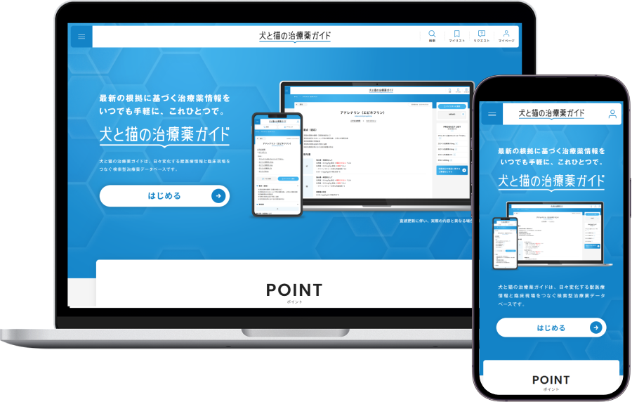
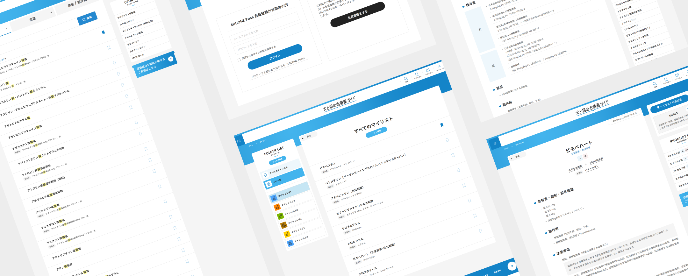
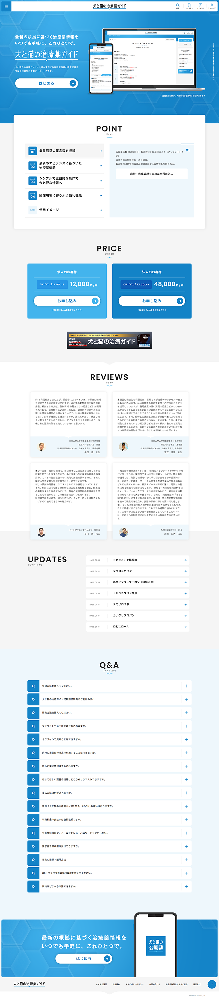
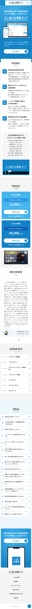

WORKS
つくったもの
犬と猫の治療薬ガイド
WEB
- 担当業務
-
フロントエンドエンジニア
- 制作期間
-
2024年10月 ～ 2025年6月
コーディング：4ヶ月 - 予算規模
- 1,000万円
- 使用ツール
- XD / VSCode
- 使用言語
- HTML / CSS / JavaScript / jQuery

犬と猫の治療薬ガイド（検索型治療薬データベースサイト）新規構築プロジェクト
獣医療従事者向けに、最新の根拠に基づいた治療薬情報を提供する検索型Webサービスの新規立ち上げにおいて、フロントエンドのコーディングを担当。
専門性の高い医療情報を迅速に検索・閲覧できるよう、UI/UXを意識した実装を行いました。
Adobe XDのデザインカンプをもとに、HTML / CSS / JavaScript / jQueryを用いて全ページのコーディングを実施。
検索性と可読性を重視したレイアウト設計により、臨床現場での実用性を高めています。
また、レスポンシブ対応を前提とした実装により、スマートフォン・タブレット・PCなど複数デバイスで快適に利用できる閲覧環境を構築。
PHPによる動的要素にも対応可能な柔軟な設計を行い、表示崩れを防ぐ安定したフロントエンドを実現しました。
さらに、SEOおよびアクセシビリティに配慮したHTML構造を設計し、将来的な運用・拡張にも対応できるコーディングを実施。
パフォーマンス最適化やブラウザ検証を通じて、品質の高いWebサイトの公開に貢献しました。

ABOUT
概要
- クライアント
-
クライアント名
- 課題
-
- 専門性の高い獣医療情報を、現場の獣医師が直感的かつ迅速に検索・確認できるUI/UX設計が求められていた
- 大量の治療薬データを扱うため、検索性・可読性を担保したフロントエンド設計が必要
- PC・スマートフォンのデバイスへの最適化（レスポンシブ対応）が必須
- 目的
-
- 臨床現場で即時に活用できる、視認性・操作性に優れた検索型Webサイトの構築
- 治療薬情報へのアクセス性を向上させ、情報取得の効率化を実現
- 将来的な機能追加や運用更新を見据えた、拡張性の高いフロントエンド設計の実装
- 取り組み
-
- Adobe XDのデザインカンプをもとに、HTML / CSS / JavaScript / jQueryで全ページのコーディングを担当
- スマートフォン・タブレット・PCに対応したレスポンシブデザインを実装
- JavaScript（jQuery）によるアニメーションやインタラクションの実装
- PHPで動的に生成される要素にも対応できる柔軟なレイアウト設計を構築
- 表示速度やパフォーマンスを考慮したコーディングを実施
- SEOおよびアクセシビリティを考慮したHTML構造の設計
- 運用更新を想定した保守性の高いHTML/CSS設計を整備
- 主要モダンブラウザでの品質チェックおよび表示検証を実施
- 成果・実績
-
- 獣医療関係者向け治療薬検索サイトの新規公開を実現
- マルチデバイスで快適に利用可能なUIを構築
- 検索性と情報整理を重視した設計により、実務で使いやすい情報閲覧環境を提供
- 拡張性・保守性を考慮した設計により、継続的なコンテンツ追加・運用を可能にした
- ターゲット
-
臨床現場で診療を行う獣医師を中心に、動物医療に関わる専門職を対象とした、専門性の高い情報を日常的に扱うユーザー層。
- クライアントの要望
-
専門性の高い治療薬情報を誰でも迷わず検索・閲覧できる設計とし、現場で即活用できるスピード感と操作性を重視したWebサイトを構築すること。また、将来的なデータ追加や機能拡張にも柔軟に対応できる構造にすること。

